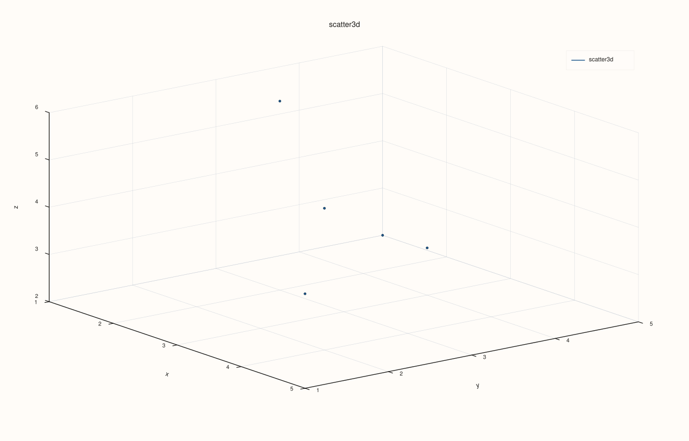

DataFramePlot3DAccessor::scatter¶
Back to DataFramePlot3DAccessor API Reference
Signature¶
DataFramePlot3DAccessor::scatter(
std::string_view x_feature,
std::string_view y_feature,
std::string_view z_feature,
std::optional<std::string_view> size_feature = std::nullopt,
std::optional<std::string_view> color_feature = std::nullopt,
const Scatter3DPlotOptions& options = {}) const -> pluss::pl::Studio
What It Does¶
Draws an unconnected 3D point cloud: row i’s (x, y, z) triple becomes one point, with
two optional per-point encodings layered on top — size_feature scales each point’s marker
size, and color_feature maps each point’s numeric value onto the trace’s color scale. This
is the 3D counterpart of DataFramePlotAccessor::scatter,
though the two differ meaningfully: the 2D scatter() accepts a categorical hue_feature
that splits points into separate colored/labeled traces, while this method’s
color_feature is a single continuous numeric gradient across one trace, closer in spirit
to a heatmap’s color scale than to the 2D accessor’s hue grouping.
See line() for the shared Studio-return / no-cout mechanics, feature-to-
axis conversion rules, and the full Plot3DSceneOptions/Plot3DTraceOptions layering
explanation — this page only covers what’s specific to scatter().
Note
size_feature and color_feature combine independently
There are effectively four call shapes, chosen entirely by which of size_feature and
color_feature are present: neither present draws uniform points at the pane’s default
marker size; size_feature alone scales marker size per point; color_feature alone
colors every point by its value while marker size stays fixed at
options.default_marker_size; both present scale size and color together. There is no
overload that lets you set a per-point color without also implicitly sizing every point
uniformly at default_marker_size when size_feature is omitted — the size argument
passed to the underlying trace call is always populated, just filled with a constant when
size_feature isn’t given.
Parameters¶
x_feature, y_feature, z_feature (std::string_view, all required)
The three features providing each point’s x, y, and z coordinate — see
line()’s note on feature-to-axis conversion.
size_feature (std::optional<std::string_view>, default std::nullopt)
Optional numeric feature controlling each point’s marker size. Omitted means every
point uses options.default_marker_size uniformly.
color_feature (std::optional<std::string_view>, default std::nullopt)
Optional numeric feature mapped onto the trace’s color scale, one continuous gradient
across all points (not a categorical split into separate traces — contrast the 2D
accessor’s hue_feature).
options (Scatter3DPlotOptions)
cpp struct Scatter3DPlotOptions { Plot3DSceneOptions scene{}; Plot3DTraceOptions trace{}; double default_marker_size{12.0}; XYAlignOptions align{XYAlignMode::Inner, XYAlignBy::Auto, 0.0}; };
default_marker_size is only consulted when size_feature is omitted; scene/trace
are the same shared structs documented in full on line(). align exists so
Catalog::plot3d().scatter() can reuse this struct type for its own multi-key
reconciliation (see
CatalogPlot3DAccessor::scatter) — DataFramePlot3DAccessor::scatter()
itself never reads it: every feature named here is already a column of the same,
already-constructed DataFrame, so there is no length mismatch for align to resolve.
Returns¶
pluss::pl::Studio
A figure with one 3D pane containing a single point-cloud trace of the n (x, y, z)
points.
Examples¶
Example 1. Default options: uniform points, no size or color encoding.
using namespace pluss::table;
auto points = DataFrame({
{"x", Thread(pluss::make_series({1.0, 2.0, 3.0, 4.0, 5.0}))},
{"y", Thread(pluss::make_series({5.0, 3.0, 4.0, 2.0, 1.0}))},
{"z", Thread(pluss::make_series({2.0, 6.0, 3.0, 5.0, 4.0}))},
{"mass", Thread(pluss::make_series({10.0, 40.0, 15.0, 55.0, 25.0}))},
{"speed", Thread(pluss::make_series({1.2, 3.4, 0.8, 4.1, 2.0}))},
});
auto chart = points.plot3d().scatter("x", "y", "z");
chart.save_svg("points3d.svg");

Example 2. size_feature only: marker size scales with mass, color stays uniform.
auto chart = points.plot3d().scatter("x", "y", "z", "mass");
chart.show();

Example 3. color_feature only: every point stays default_marker_size (12.0), but
color now maps to speed.
auto chart = points.plot3d().scatter("x", "y", "z", std::nullopt, "speed");
chart.save_pdf("points3d_colored.pdf");
Passing std::nullopt explicitly for size_feature here is required syntax — there is no
overload that skips straight to color_feature while omitting size_feature entirely.
Example 4. Both size_feature and color_feature: marker size scales with mass, color
maps to speed.
auto chart = points.plot3d().scatter("x", "y", "z", "mass", "speed");
chart.show();
Example 5. An explicit Scatter3DPlotOptions, raising default_marker_size (which only
takes effect because size_feature is omitted here) and applying a Cloud trace preset.
Scatter3DPlotOptions options;
options.default_marker_size = 30.0;
options.trace.preset = pluss::pl::flash::TracePreset3D::Cloud;
auto chart = points.plot3d().scatter("x", "y", "z", std::nullopt, std::nullopt, options);

Example 6. A mismatched-length size_feature (fewer rows than the frame) throws, same as
every axis feature.
auto mismatched = DataFrame({
{"x", Thread(pluss::make_series({1.0, 2.0, 3.0}))},
{"y", Thread(pluss::make_series({1.0, 2.0, 3.0}))},
{"z", Thread(pluss::make_series({1.0, 2.0, 3.0}))},
});
mismatched = mismatched.features({"x", "y", "z"});
try {
// A contrived example: size_feature named here doesn't exist on the frame.
auto bad = mismatched.plot3d().scatter("x", "y", "z", "missing");
} catch (const std::exception& e) {
std::cout << e.what();
}
Notes¶
size_featureandcolor_featureare independent optional encodings — see the note above for exactly how the four combinations behave.default_marker_sizeonly applies whensize_featureis omitted.Unlike the 2D accessor’s
hue_feature,color_featureis a single continuous gradient across one trace, not a split into separate colored/labeled traces.Returns a
pluss::pl::Studio— seeline()’s important callout for how to view or save the result.
See Also¶
DataFramePlotAccessor::scatter: the 2D counterpart, with a categoricalhue_featureinstead of a continuouscolor_feature.DataFramePlot3DAccessor::line: connected points in row order, instead of an unconnected cloud.